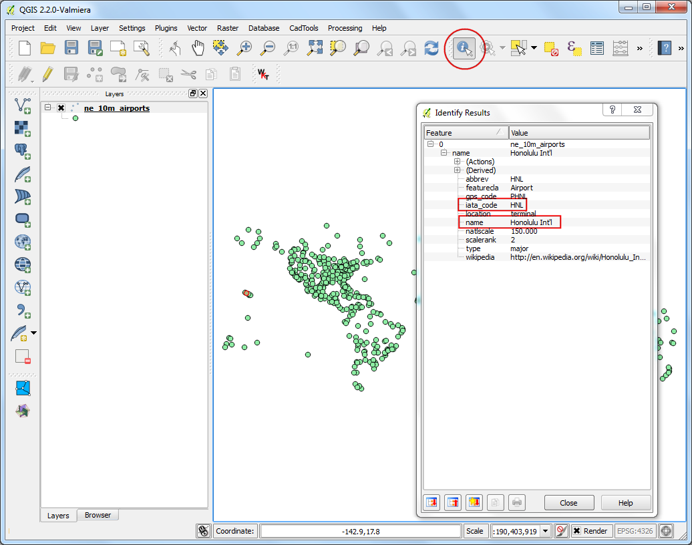

Beginnen met programmeren in Python
[ Download PDF A4 Letter ]
QGIS heeft een krachtige interface voor programmeren die u in staat stelt de bron-functionaliteit van de software uit te breiden en ook om scripts te schrijven om uw taken te automatiseren. QGIS ondersteunt de populaire programmeertaal voor scripten Python. Zelfs als u een beginner bent, leer een klein beetje Python en de interface voor programmeren van QGIS zal u in staat stellen veel productiever te werk te gaan. Deze handleiding gaat er van uit dat u geen eerdere kennis van programmeren heeft en is bedoeld als introductie voor het scripten met Python in QGIS (PyQGIS).
Overzicht van de taak
We zullen een vector puntlaag laden die alle belangrijke vliegvelden weergeeft en scripten in Python gebruiken om een tekstbestand te maken met de naam van het vliegveld, de code van het vliegveld en latitude en longitude voor elk vliegveld op de laag.
Procedure
Ga in QGIS naar . Blader naar het gedownloade bestand ne_10m_airports.zip en klik op Openen. Selecteer de laag ne_10m_airports.shp en klik op OK.

U zult de laag ne_10m_airports zien geladen in QGIS.

Selecteer het gereedschap Objecten identificeren en klik op één van de punten om daarvan de beschikbare attributen te bekijken. U zult zien dat de naam van het vliegveld en de 3-cijferige code ervan zijn opgenomen in de respectievelijke attributen name en iata_code.

QGIS verschaft een ingebouwde console waar u opdrachten voor Python kunt typen en de resultaten verkrijgt. Deze console is een fantastische manier om te leren scripten en ook om snel gegevens te verwerken. Open de Python Console door te gana naar .

U zult zien dat een nieuw paneel wordt geopend aan de onderzijde van het kaartvenster van QGIS. U zult een prompt als >>> zien aan de onderzijde waar u opdrachten kunt typen. Voor de interactie met de omgeving van QGIS, moeten we de variabele iface gebruiken. U kunt het volgende typen en op Enter drukken om toegang te krijgen tot de huidige actieve laag in QGIS. Deze opdracht haalt de verwijzing naar de huidige geladen laag op en slaat die op in de variabele layer.
layer = iface.activeLayer()

Er bestaat een handige functie, genaamd dir(), in Python die u alle beschikbare methoden voor een object laat zien. Dat is handig als u niet precies weet welke functies beschikbaar zijn voor het object. Voer de volgende opdracht uit om te zien welke bewerkingen we kunnen doen met de variabele layer.

U zult ene lange lijst met beschikbare functies zien. Voor nu zullen we de functie, genaamd getFeatures(), gebruiken wat u een verwijzing zal geven naar alle objecten van een laag. In ons geval zal elk object een punt zijn dat een vliegveld weergeeft. U kunt de volgende opdracht typen om door elk van de objecten op de huidige laag te gaan. Zorg er voor dat u 2 spaties toevoegt vóórdat u de tweede regel typt.
for f in layer.getFeatures():
print f

Zoals u in de uitvoer zult zien, bevat elke regel een verwijzing naar een object op de laag. De verwijzing naar het object wordt opgeslagen in de variabele f. We kunnen de variabele f gebruiken om toegang te krijgen tot de attributen van elk object. Typ het volgende om de name en iata_code voor elk object vliegveld af te drukken.
for f in layer.getFeatures():
print f['name'], f['iata_code']

U weet dus nu hoe u programmatisch toegang kunt krijgen tot de attributen van elk object op een laag. laten we dan nu eens zien hoe we toegang krijgen tot de coördinaten van het object. Toegang tot de coördinaten van het vectorobject kan worden verkregen door de functie geometry() aan te roepen. Deze functie geeft een object geometrie terug dat we kunnen opslaan in de variabele geom. U kunt de functie asPoint() op het object geometrie uitvoeren om de X- en Y-coördinaten van het punt te verkrijgen. Als uw object een lijn of polygoon is, kunt u de functies asPolyline() of asPolygon() gebruiken. Typ de volgende code bij de prompt en druk op Enter om de X- en Y-coördinaten van elk object te bekijken.
for f in layer.getFeatures():
geom = f.geometry()
print geom.asPoint()

Wat als we alleen het X-coördinaat van het object wilden? U kunt de functie x() aanroepen voor het object punt en daarvan het X-coördinaat verkrijgen.
for f in layer.getFeatures():
geom = f.geometry()
print geom.asPoint().x()

Nu hebben we alle stukjes die we aan elkaar kunnen naaien om de door ons gewenste uitvoer te verkrijgen. Typ de volgende code om de naam, iata_code, latitude en longitude van alle objecten vliegveld af te drukken. De notaties %s en %f zijn manieren om de string en number variabelen op te maken.
for f in layer.getFeatures():
geom = f.geometry()
print '%s, %s, %f, %f' % (f['name'], f['iata_code'],
geom.asPoint().y(), geom.asPoint().x())

U kunt de uitvoer zien worden afgedrukt op de console. Een meer handige manier om de uitvoer op te slaan zou een bestand zijn. U kunt de volgende code typen om een bestand te maken en de uitvoer daar naartoe weg te schrijven. vervang het bestandspad door een bestandspad op uw eigen systeem. Onthoud dat we \n toevoegen aan het einde van de opmaak van onze regel. Dat is om ene nieuwe regel toe te voegen na de gegevens voor elke object. U zou ook de regel unicode_line = line.encode('utf-8') moeten onthouden. Omdat onze laag enkele objecten bevat met tekens in Unicode, kunnen we het niet eenvoudigweg wegschrijven naar een tekstbestand. We coderen de tekst met behulp van de codering UTF-8 en schrijven dan weg naar het tekstbestand.
output_file = open('c:/Users/Ujaval/Desktop/airports.txt', 'w')
for f in layer.getFeatures():
geom = f.geometry()
line = '%s, %s, %f, %f\n' % (f['name'], f['iata_code'],
geom.asPoint().y(), geom.asPoint().x())
unicode_line = line.encode('utf-8')
output_file.write(unicode_line)
output_file.close()

U kunt naar de locatie van het uitvoerbestand gaan ie u heeft gespecificeerd en het tekstbestand openen. U zult de gegevens uit het shapefile Airports zien die we hebben uitgenomen door middle van scripten met Python.